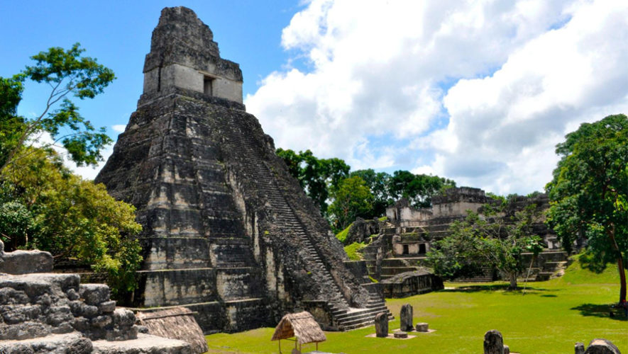
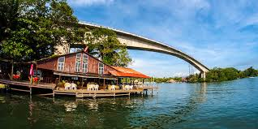
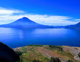
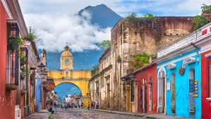
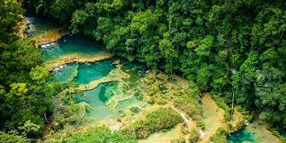

El Parque Nacional Tikal está ubicado en el departamento de Petén, al norte de Guatemala. Tiene un clima cálido
y esta rodeado de un espeso bosque. En este parque podemos encontrar varias arquitecturas prehispánicas, una de
las más famosas es "El Gran Jaguar". En este lugar también se puede apreciar la diversa fauna y flora originaria
de este país.

Río Dulce se encuentra en el departamento de Izabal, en la región nor-oriental de Guatemala. Este río reúne ditintos
ecosistemas acuaticos. A lo largo de su rivera podemos encontrar un hermoso bosque tropical lluvioso el cual
se atraviesa a través de una lacha, durante el recorrido también se puede apreciar el hermoso castillo de San
Felipe. Este río es el hábitat del manatí, el cocodrilo y otras creaturas sorprendentes.

El lago de atitlán esta ubicado en el departamento de sololá, en la región sur-occidente de Guatemala. Se
encuentra a 125km de la ciudad de Guatemala. Este lago es uno de los más bellos del mundo. Se encuetra
rodeado por tres volcanes(Atitlán, Tolimán y San Pedro).

La Antigua Guatemala esta ubicada en el departamento de Sacatepéquez, en la region central de Guatemala. Se
encuentra a 40km de la ciudad de Guatemala. En este lugar se pueden apreciar construcciones de la época
colonial. Entre los monumentos más destacados se encuentra: la Iglesia de la Merced, el Cerro de la Cruz, El
Arco de Santa Catalina y muchos otros lugares interesantes. Esta ciudad se encuentra rodeada por tres volcanes,
el volcan de agua, el volcan de fuego y el volcan de Acatenango.

El Parque Nacional Semuc Champey se encuentra localizado en el departamento de Coban, Alta Verapaz, en la
región norte de Guatemala. Este lugar se encuentra en un valle rodeado de un espeso bosque. En este bosque
habitan diferentes especies animales y diferentes plantas. En una de las laderas de este valle se encuentra
un mirador de mas de 50 metros de altura, donde se pueden observar las pozas de una manera extraordinaria.
